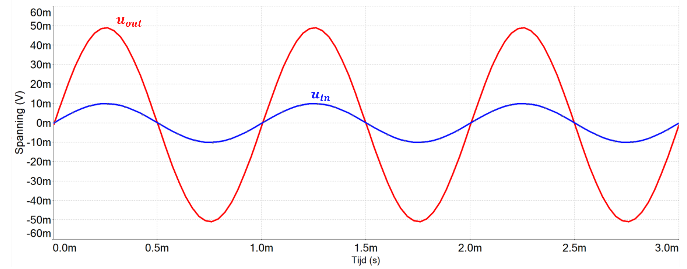
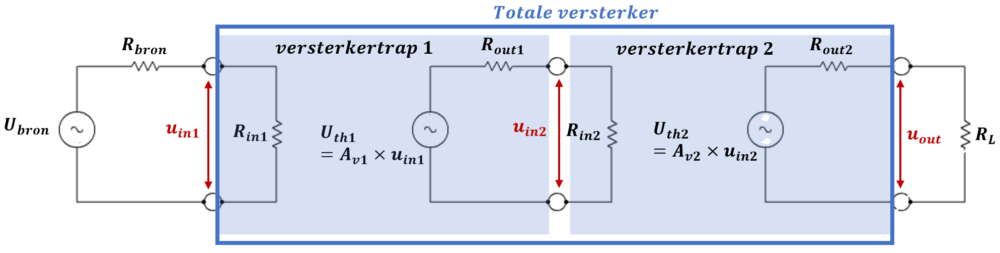
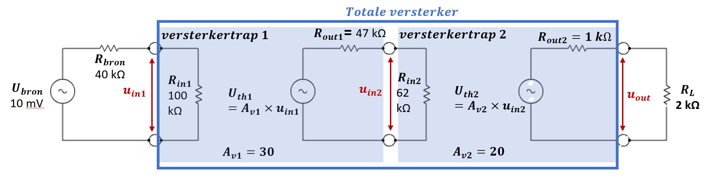

Versterkers
De meeste signalen vereisen versterking vooraleer ze verder kunnen worden verwerkt. Versterking houdt in dat de magnitude van een signaal wordt vergroot en is één van de belangrijkste operaties in de elektronica. Andere operaties in het veld van lineaire elektronica zijn signaalgeneratie (oscillatoren), waveshaping, frequentieconversie, modulatie, … Veel elektronische schakelingen bevatten een combinatie van digitale en lineaire elektronica. De meerderheid van dit soort schakelingen zijn interfaces die omzettingen doen van analoog naar digitaal of omgekeerd.
Wat is belangrijk?
Je kent de vergelijking voor spanningsversterking en vermogenversterking.
Je omschrijft met eigen woorden wat bedoeld wordt met de transfertcurve is van een versterker.
Je verklaart hoe een versterker kan voorgesteld worden als een Thevenin-equivalent of een Norton-equivalent om een lineair ingangscircuit of uitgangscircuit van deze versterker voor te stellen.
Je vormt een versterker via cascading van trappen (stages)
Je bepaalt het belastingseffect van een versterkertrap op een andere versterkertrap.
Je berekent het logaritme of antilog van een gegeven getal met een rekenmachine.
Je zet een spannings- en vermogenversterking om in decibel.
Lineaire versterkers
Lineaire versterkers zorgen voor een versterkt replica van het ingangssignaal om zodoende een voldoende signaal te bekomen. Bijvoorbeeld het geluid van een mp3-speler versterken zodat dit kan gebruikt worden om een luidspreker aan te sturen. Het concept van een ideale versterker is dat deze geen ruis toevoegd en het signaal niet vervormd. De output varieert in de tijd en is een exacte grotere replica van het ingangssignaal. Meestal is een versterker zodanig ontworpen dat deze spanning of vermogen versterkt. De spanningsversterking kan als volgt worden bepaald:
Hierbij stelt de spanningsversterking voor van de versterker, de spanning van het uitgangs-signaal en de spanning van het ingangssignaal. Figuur 1-9 stelt de transfertcurve van een lineaire versterker voor, meer bepaald een niet inverterende opampversterker met versterkingsfactor aangesloten op een gelijkspanningsvoeding van . Een ideale versterker heeft een rechte lijn als versterkings-curve die doorgaat tot in het oneindige. Voor een actuele versterker is de curve rechtlijning tot verzadiging (saturation) wordt bereikt. Uit de figuur is af te leiden dat bij de als voorbeeld genomen opampversterker verzadiging optreedt vanaf een uitgangsspanning ongeveer gelijk aan
Alle versterkers hebben bepaalde grenzen waarboven ze niet meer als ideaal werken. Eens de ingangsspanning groter wordt dan deze grens, wordt het verzadigingspunt bereikt. Vanaf het verzadigingspunt volgt de uitgang niet langer meer de ingang en treedt er vervorming op.

Figuur 1-9 : voorbeeld van een transfertkarakteristiek van een lineaire versterker
Voorbeeld 1-3
Het in- en uitgangssignaal van een lineaire versterker is in figuur 1-10 weergegeven. Hoeveel bedraagt de spanningsversterking van deze versterker?

Figuur 1-10
Oplossing
Het ingangssignaal heeft een amplitude van ongeveer en het uitgangssignaal een amplitude van ongeveer . De spanningsversterking is dan gelijk aan :
Alle versterkers hebben een bepaalde energiebron nodig, meestal in de vorm van een gelijkspan-ningsbron. Om de versterking te bekomen converteren versterkers een bepaalde hoeveelheid ernergie van deze spanningsbron om in signaalvermogen. In blokschema’s wordt dikwijls die voedingssignaal weggelaten maar het is onmisbaar om versterking te bekomen.
De niet-lineaire versterker
Niet-lineaire versterkers worden vooral gebruikt voor waveshaping en switching. Waveshaping houdt in dat het uitzicht van de golfvorm verandert wordt. Een switching versterker produceert een rechthoekige uitgang aan de hand van een bepaalde golfvorm aan de ingang. Zo kan bijvoorbeeld uit een sinusvorm, driehoek of zaagtandvorm een rechthoekige signaal gemaakt worden dat gebruikt kan worden als controlesignaal voor bepaalde digitale applicaties.
Vermogenversterking
Naast spanningsversterking wordt er ook veel gewerkt met vermogenversterking. Vermogenversterking kan men bepalen via volgende formule:
Hierbij stelt de vermogenversterking voor, het uitgangsvermogen en het ingangsvermogen. Vermogen kan uitgedrukt worden in functie van spanning en stroom. Aldus kan men de vermogenversterking ook als volgt bepalen:
Ook met behulp van de in- en uitgangsweerstanden en hun respectievelijke spanningen kan het vermogen bepaald worden:
Hierbij is de belastingsweerstand en de ingangsweerstand van de versterker. stelt de spanningsversterking van deze versterker voor.
Equivalent schema van een versterker
Versterkers bestaan meestal uit transistoren, weerstanden, condensatoren, opamps,… Toch kan men ze eenvoudig voorstellen zodat het analyseren van deze versterkers eenvoudiger wordt. De vereenvoudiging wordt bekomen door de versterker voor te stellen als een bron en een belasting. Hierdoor komt de analyse neer op het bestuderen van het gedrag van deze bron en belasting. Een versterker kan voorgesteld worden als de interface tussen een bron, die ook als een Thevenin-equivalent kan worden voorgesteld, en een belasting. Dit is weergegeven in figuur 1-11. Het ingangssignaal is afkomstig van de bron en wordt aangelegd aan de inputklemmen (terminals) van de versterker die als open cirkels zijn voorgesteld in het schema. De ingangsweerstand van versterker is verbonden met deze terminals en vormt met de Thevenin-weerstand van de bron een spanningsdeler op de Thevenin-spanning van deze bron. Dit betekent dat de verhouding van ten opzichte van invloed heeft op de hoeveelheids spanning die uiteindelijk over de ingangsklemmen van de versterker komt te staan.
De uitgang van de versterker kan getekend worden als Thevenin- of Norton -equivalent. Ook dit is weergegeven in figuur 1-11. De magnitude van de bron in de versterker is afhankelijk van de onbelaste versterking en de ingangsspanning.

Figuur 1-11 : voorstelling van een versterker via zijn equivalente ingangsweerstand en afhankelijk uitgangscircuit
De bron in het Thevenin- of Norton-equivalent is een afhankelijke bron. De waarde van deze bron is steeds afhankelijk van een spannings- of stroomwaarde ergens anders in de schakeling.
In cascade schakelen van versterkertrappen
Zoals hierboven is beschreven maken Thevenin- en Nortonmodellen van de versterker het gemakkelijker voor het analyseren van versterkersystemen. Deze equivalente schema’s zijn ook bruikbaar wanneer meerdere versterkertrappen in cascade worden geschakeld. Hiermee kunnen analyses uitgevoerd worden waarmee nagegaan kan worden wat de invloed is van de interne belasting op bijvoorbeeld de eerste versterkertrap op de totale versterking. Figuur 1-12 toont het equivalent schema van een tweetrapsversterker. De totale versterking is beïnvloed door de belastingseffecten van ieder van de drie lussen. Iedere lus bestaat uit een eenvoudige serieschakeling zodat de spanningen via de formule voor spanningsdeling gemakkelijk berekent kunnen worden.

Figuur 1-12 : Cascadeschakeling van twee versterkertrappen
Voorbeeld 1-4
Stel een transducer met een Thevin onbelaste bron met spanning en een Thevenin bronweerstand gelijk aan Deze transducer is verbonden met een tweetraps versterker met de kenmerken zoals in figuur 1-13 is weergegeven. Bereken de spanning over de belastingsweerstand van .

Figuur 1-13
Oplossing
Via de spanningsdelerformule kan je bepalen hoeveel spanning over komt te staan van versterkertrap :
De spanning wordt door versterkertrap dertig keer versterkt. Dit levert volgende spanning op voor :
Op analoge wijze als de bepaling van kan je nu ook bepalen:
= 121,89 mV
wordt twintig keer versterkt door versterkertrap . Dit levert een op gelijk aan:
De uiteindelijk versterkte spanning die over de belastingsweerstand van komt te staan is gelijk aan:
Merk op dat de spanningsversterking zonder verliezen aan de in- en uitgangen van de versterkertrappen gelijk aan of 600 is in plaats van de 163 die er nu uiteindelijk over blijft. Als je de ingangsweerstanden van de versterkertrappen minstens 10 keer hoger maakt dan de uitgangsweerstanden van de transducer en de uitgangsweerstand , en 10 keer kleiner dan de belasting dan bekom je een totale spanningsversterking gelijk aan 450. Je ziet dus dat de keuze van in- en uitgangsimpedantie van een versterkertrap een enorme invloed heeft op de uiteindelijke versterkingsfactor van de schakeling.
De decibel (dB) als hoeveelheid voor versterking
Een veel gebruikte eenheid in de elektronica is de decibel (dB). Deze eenheid is gebaseerd op logartimen. Een logaritme kan beschouwd worden als een vorm van exponent. Beschouw bijvoorbeeld de volgende vergelijking:
De waarde wordt bepaald door de exponent () van de basis ( of grondtal. De exponent is het logaritme van het getal dat voorgesteld is door de letter . Binnen elektronica worden twee basissen (grondtallen) voor logartimen veel gebruikt. Deze zijn de basis “” en de basis “”. Om een onderscheid tussen beiden te maken wordt het logaritme met basis vooorgesteld als en het logaritme met basis voorgesteld als . Het logaritme met basis vind je onder andere terug in formules om het laad- en ontlaadverloop van condensatoren of spoelen te bepalen. Meer informatie hierover vind je terug in de cursus electric fundamentals.
Om te werken met decibel wordt als grondtal genomen. Aldus bekomt men als algemene vergelijking:
Bovenstaande vergelijking oplossen naar levert volgend resultaat op:
Het subscript kan worden weggelaten vermits het vervat zit bij het gebruik van . Logaritmen zijn bruikbaar als je moet vermenigvuldigen of delen met zeer grote of zeer kleine getallen. Als twee getallen geschreven worden met exponenten en deze worden met elkaar vermenigvuldigd, worden de exponenten eenvoudig met elkaar opgeteld. Voorbeeld:
In logaritmevorm:
Voorbeeld 1-5 :
Bepaal het logaritme (grondtal 10) voor volgende getallen: en .
Oplossing :**
Je kan de logaritmen bepalen door ieder getal in je rekenmachine te tikken en vervolgens op de -toets te drukken. De resultaten zijn:
Merk op dat iedere stijging met een factor van in een stijging van teweeg brengt in het logaritme ()
Dit concept is bruikbaar aangaande het vermenigvuldigen van versterkingen van meerdere versterkertrappen of verzwakkers.
Voorbeeld 1-6 :
Zoek het getal waarvan het logaritme is gegeven. Doe dit door ieder getal in te geven in je rekenmachine en vervolgens op de toets te drukken. Alternatieven die eventueel op je rekenmachine staan in plaats van zijn of .
Gebruik volgende getallen :
Oplossing :**
Merk op dat iedere stijging met in (het logaritme) een factor stijging veroorzaakt in het getal.
Decibel vermogenverhoudingen {#voorbeeld-1-6-zoek-het-getal-waarvan-het-logaritme-is-gegeven-doe-dit-door-ieder-getal-in-te-geven-in-je-rekenmachine-en-vervolgens-op-de-toets-te-drukken-alternatieven-die-eventueel-op-je-rekenmachine-staan-in-plaats-van-zijn-of-gebruik-volgende-getallen-oplossing-merk-op-dat-iedere-stijging-met-in-het-logaritme-een-factor-stijging-veroorzaakt-in-het-getal-decibel-vermogenverhoudingen}
In de beginjaren van de telefonie besloten ingenieurs de decibel te gebruiken als een middel om grote bereiken van versterking of verzwakking te beschrijven. De decibel (dB) wordt gedefinieerd als vermenigvuldigd met de logaritmische verhouding van vermogenversterking. In formulevorm:
Hierin zijn en de twee vermogenniveaus die met elkaar worden vergeleken. Passen we dit toe op de vermogenversterking om deze waarde in dB te verkrijgen. De vermogenversterking uitgedrukt in decibel is als volgt:
Hierin is de vermogenversterking in , het vermogen geleverd aan de belasting en het vermogen geleverd aan de ingang van de versterker. De is een dimensieloze hoeveelheid omdat het een verhouding is. Iedere vermogenmeting met dezelfde verhouding heeft dezelfde hoeveelheid . Zo heeft bijvoorbeeld een vermogensverhouding tussen en een hoeveelheid van . Dit is een even grote hoeveelheid als de vermogensverhouding tussen en . De dB-waarde is positief voor versterking en negatief voor een verzwakking of vermogenverlies.
Een belangrijke verhouding is de verhouding . De reden hiervoor is dat deze vermogensverhouding gebruikt wordt voor het specificeren van afsnijfrequenties voor versterkers en filters. Immers een vermogenverhouding van stelt een verdubbeling van het vermogen voor. Vullen we deze vermogensverhouding in de fomule in dan bekomen we:
Deze verhouding stelt een verdubbeling voor van het vermogen en wordt meestal afgerond ot . Indien we nu een verhouding ingeven met bekomen we een vermogen van . levert dus een vermedering van vermogen op van . Op analoge wijze stelt een versterking van vermogen van een versterking voor gelijk aan of .
De vermogensverhouding in decibel waarbij het uitgangsvermogen nog de helft is van het ingangsvermogen kan als volgt bepaald worden:
Je merkt dat bij een halvering van het vermogen we eveneens te maken hebben met een vermogenverhouding van maar met een minteken ervoor. Het negatieve resultaat betekent dat het uitgangsvermogen lager is dan het ingangsvermogen.
Voorbeeld 1-7 :
Bepaal de totale vermogenversterking van de versterker uit voorbeeld 1-4 (figuur 1-13)
Oplossing :**
Het ingangsvermogen dat geleverd wordt aan de versterker is gelijk aan:
Het uitgangsvermogen dat geleverd wordt aan de belasting is gelijk aan:
De vermogenversterking in is dan gelijk aan:
Een andere belangrijke verhouding is de verhouding . Vermits gelijk is aan , stelt een vermogenverhouding van op voor. Met deze gegevens kan je snel de totale vermogenversterking bepalen. Zo kan bijvoorbeeld een vermogenversterking van opgesplitst worden in twee keer en één keer . Dit levert een totale vermogenversterking op van of .
Binnen de elektronica worden verschillende versterkertrappen gecombineerd tot één grote versterking of verzwakking. De totale spanningsversterking heeft dan een vorm zoals:
De decibel-eenheden zijn in dit geval erg nuttig vermits ze het toelaten om de afzonderlijke dB-waarde per versterkertrap op te tellen in plaats van ze te vermenigvuldigen. De totale spanningsversterking in decibel kan bijgevolg als volgt worden bepaald:
Voorbeeld 1-8 :
Stel dat het uitgezonden vermogen van een radarsysteem gelijk is aan . De antenne die de weerkaatste radarpulsen ontvangt levert aan zijn uitgang deze pulsen met een verzwakking van . Van de antennen worden deze pulsen overgebracht via coaxkabel naar de ontvanger. In de coaxkabel zijn twee koppelstukken aangebracht die elk verzwakken. De ingangsweerstand van de ontvanger bedraagt . Wat is het gedissipeerd vermogen in deze ingangsweerstand van de ontvanger?
Oplossing :**
Het vermogen om de radarpulsen uit te zenden is gelijk aan . Van dit vermogen blijft een vermogensverhouding van over aan de uitgang van de antenne. Door de koppelstukken in de coaxkabel wordt het signaal nog eens twee keer verzwakt zodat de totale verzwakking aan de ingang van de ontvanger gelijk is aan
In formulevorm:
Om de -functie op te heffen moeten beide termen van de vergelijking als exponent van een macht van worden geschreven. In formulevorm:
Hiermee is de -functie opgeheft en kunnen we het vermogen bepalen:
De dBm-waarde {#voorbeeld-1-8-stel-dat-het-uitgezonden-vermogen-van-een-radarsysteem-gelijk-is-aan-de-antenne-die-de-weerkaatste-radarpulsen-ontvangt-levert-aan-zijn-uitgang-deze-pulsen-met-een-verzwakking-van-van-de-antennen-worden-deze-pulsen-overgebracht-via-coaxkabel-naar-de-ontvanger-in-de-coaxkabel-zijn-twee-koppelstukken-aangebracht-die-elk-verzwakken-de-ingangsweerstand-van-de-ontvanger-bedraagt-wat-is-het-gedissipeerd-vermogen-in-deze-ingangsweerstand-van-de-ontvanger-oplossing-het-vermogen-om-de-radarpulsen-uit-te-zenden-is-gelijk-aan-van-dit-vermogen-blijft-een-vermogensverhouding-van-over-aan-de-uitgang-van-de-antenne-door-de-koppelstukken-in-de-coaxkabel-wordt-het-signaal-nog-eens-twee-keer-verzwakt-zodat-de-totale-verzwakking-aan-de-ingang-van-de-ontvanger-gelijk-is-aan-in-formulevorm-om-de-functie-op-te-heffen-moeten-beide-termen-van-de-vergelijking-als-exponent-van-een-macht-van-worden-geschreven-in-formulevorm-hiermee-is-de-functie-opgeheft-en-kunnen-we-het-vermogen-bepalen-de-dbm-waarde}
Onder wordt het vermogenniveau verstaan waarbij verondersteld wordt dat er vermogen ontwikkeld wordt in een belastingsimpedantie. Bij hoogfrequentsystemen wordt meestal als weerstand genomen terwijl voor audiosystemen de belangsimpedantie is. In formulevorm:
Hierbij stelt het vermogen voor dat vergeleken wordt met het referentieniveau van . De vermogensverhouding wordt algemeen gebruikt om het uitgangsniveau van signaalgeneratoren weer te geven en binnen de telecommunicatie gebruikt voor het vereenvoudigen van berekeningen en vermogennieveaus.
Decibel spanningsverhoudingen
Vermits het vermogen ook kan bepaald worden via de verhouding kan de decibelvermogensverhouding ook als volgt worden geschreven:
Hierbij zijn en de weerstanden waarin het vermogen en zich in ontwikkelen. en zijn de spanningsvallen over de weerstanden en . Als de weerstanden aan elkaar gelijk zijn dan wordt volgende vergelijking verkregen:
Een eigenschap van logaritmen is dat het kwadraat van de spanningen vooraan kan geschreven worden. Immers:
Waardoor:
Algemeen vinden we dan de spanningsversterking in dB :
Voorbeeld 1-9 :
Een versterker met een ingangsimpedantie van stuurt een luidspreker aan met impedantie . Als de ingangsspanning gelijk is aan 200 mV en de uitgangsspanning gelijk is aan , bepaal dan de vermogenversterking in decibel en de spanningsversterking in decibel.
Merk op dat de vermogenversterking in en de spanningsversterking in dezelfde verhouding geven als de ingangsimpedantie en de belasting dezelfde waarde hebben. Wanneer deze weerstanden niet gelijk zijn elkaar geven beide dB-formules niet hetzelfde resultaat. Merk eveneens op dat bij de decibel spanningsversterking een verhouding van twee op één een decibelwaarde heeft van ongeveer . Bij een verhouding van één op twee is dit . Bij een verhouding van op is de dB-waarde vermits gelijk is aan .
Oplossing :
De spanningsversterking in decibel is gelijk aan:
Het vermogen geleverd aan de belasting is gelijk aan :
Het vermogen aan de ingang is gelijk aan :
De vermogenversterking in is dan gelijk aan :
Test jezelf aangaande versterkers {#oplossing-de-spanningsversterking-in-decibel-is-gelijk-aan-het-vermogen-geleverd-aan-de-belasting-is-gelijk-aan-het-vermogen-aan-de-ingang-is-gelijk-aan-de-vermogenversterking-in-is-dan-gelijk-aan-test-jezelf-aangaande-versterkers}
Wat is een lineaire versterker?
Wat is een afhankelijke bron?
Wat is een decibel?